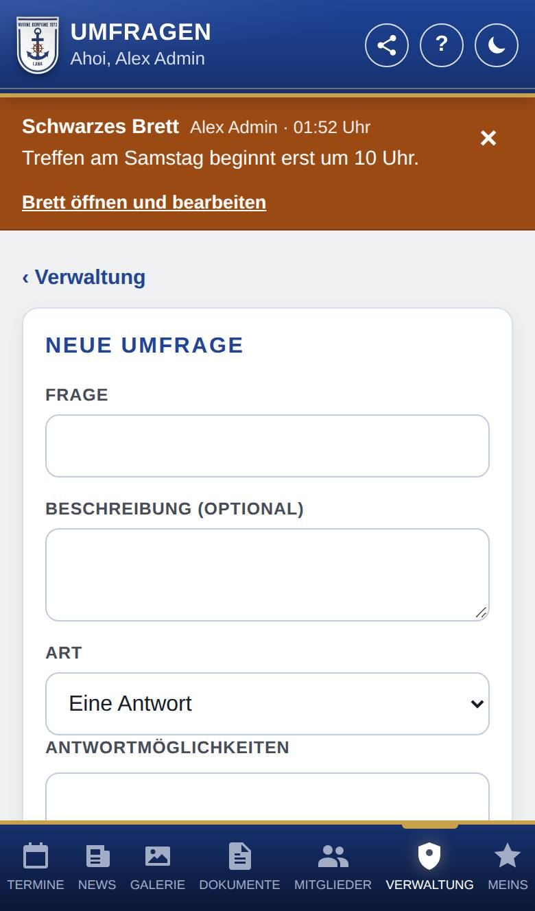
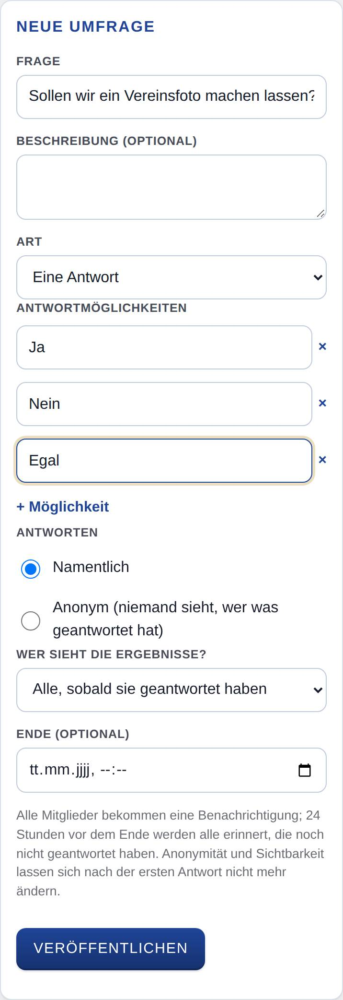
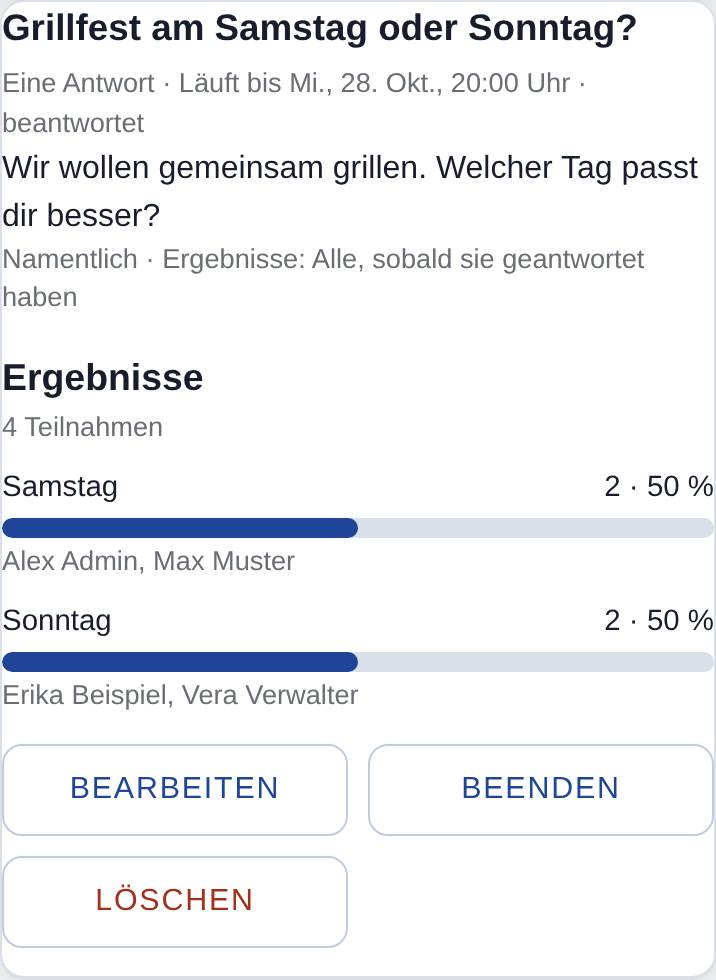

Umfragen verwalten
Nur, wenn Umfragen eingeschaltet ist.
Hier legst du Umfragen für alle Mitglied an, änderst sie, beendest sie vorzeitig oder löschst sie. Außerdem siehst du die Ergebnisse aller Umfragen, auch während sie laufen.

So öffnest du die Seite
Tippe unten auf Verwaltung und dann auf Umfragen. Auch am Schwarzes Brett und in der Liste aller Umfragen führt der Knopf Umfragen verwalten hierher.
Was du hier siehst
- ‹ Verwaltung: zurück zur Startseite der Verwaltung (nur, wenn du dort mehrere Aufgaben hast).
- Neue Umfrage: das Formular zum Anlegen.
- Alle Umfragen: alle Umfragen, laufende und beendete, neueste zuerst. Bei jeder stehen Frage, Art, Ende, Namentlich oder Anonym, wer die Ergebnisse sieht, und die Ergebnisse. Darunter die Knöpfe Bearbeiten und Beenden (nur, solange sie läuft) und Löschen.
So gehst du vor
Eine Umfrage anlegen
- Trage bei Frage die Frage ein (höchstens 150 Zeichen). Bei Bedarf schreibst du darunter eine Beschreibung (optional).
- Wähle bei Art: Eine Antwort, Mehrere Antworten möglich oder Freitext.
- Bei Eine Antwort und Mehrere Antworten möglich: Trage unter Antwortmöglichkeiten mindestens zwei verschiedene ein. Mit + Möglichkeit kommt eine weitere dazu, × entfernt eine.
- Wähle unter Antworten: Namentlich oder Anonym.
- Wähle bei Wer sieht die Ergebnisse?: Alle, sobald sie geantwortet haben, Alle nach dem Ende oder Nur die Verwalter der Umfragen.
- Trage bei Bedarf ein Ende (optional) mit Datum und Uhrzeit ein. Ohne Ende läuft die Umfrage, bis jemand sie beendet.
- Tippe auf Veröffentlichen und bestätige die Nachfrage.

Die Umfrage steht danach sofort am Schwarzes Brett und im Banner der Mitglied.
Eine Umfrage ändern
- Tippe bei der Umfrage auf Bearbeiten.
- Ändere die Felder. Frage, Beschreibung und Ende kannst du immer ändern. Gibt es schon Antworten, sind Art, Antwortmöglichkeiten, Anonymität und Sichtbarkeit der Ergebnisse fest.
- Tippe auf Speichern. Mit Abbrechen bleibt alles, wie es war.

Eine Umfrage vorzeitig beenden
- Tippe bei der Umfrage auf Beenden.
- Bestätige die Nachfrage. Danach kann niemand mehr antworten oder seine Antwort ändern. Wieder öffnen geht nicht.
Eine Umfrage löschen
- Tippe bei der Umfrage auf Löschen.
- Bestätige die Nachfrage. Die Umfrage verschwindet mit allen Antworten, auch wenn sie schon beendet ist.
Gut zu wissen
- Beim Veröffentlichen bekommen alle Mitglied außer dir eine Benachrichtigung, wenn sie die Art Umfragen: neue Umfrage und Erinnerung auf ihrem Gerät eingeschaltet haben.
- 24 Stunden vor dem Ende erinnert die App einmal alle, die noch nicht geantwortet haben. Endet die Umfrage schon innerhalb von 24 Stunden nach dem Veröffentlichen, entfällt die Erinnerung. Verschiebst du das Ende auf später als 24 Stunden, gibt es wieder eine Erinnerung.
- Ändern verschickt keine neue Benachrichtigung. Wer die Umfrage auf seinem Gerät ausgeblendet hatte, sieht sie danach wieder im Banner.
- Bei Anonym sieht niemand, wer was geantwortet hat, auch du nicht. Bei Namentlich stehen die Namen bei den Ergebnissen.
- Wer Umfragen verwalten darf, sieht die Ergebnisse immer, auch bei Nur die Verwalter der Umfragen und schon während die Umfrage läuft.
- Ändern, beenden und löschen darf jede und jeder mit diesem Recht, nicht nur, wer die Umfrage angelegt hat.
- Grenzen: Beschreibung höchstens 1000 Zeichen, 2 bis 20 Antwortmöglichkeiten mit je höchstens 100 Zeichen, keine doppelt. Das Ende muss in der Zukunft liegen.
- An Umfragen nehmen nur Mitglied teil, nicht z. B. Anwärter.